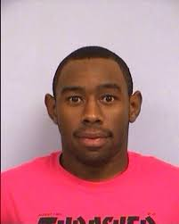

<!--
<!DOCTYPE html>
<html>
    <head>
        <title>TylerTheCreator | HOME</title>
        <meta name="description" content="This is the description">
        <link rel="stylesheet" href="styles.css" />
    </head>
    <body>
        <header class="main-header">
            <nav class="nav main-nav">
                <ul>
                    <li><a href="index.html">HOME</a></li> 
                    <li><a href="store.html">STORE</a></li>
                    <li><a href=webDev.html>ABOUT</a></li>
                </ul>
            </nav>

            <h1 class="band-name">Tyler The Creator</h1>
        </header>
        <section class="content-section container">
            <h2 class="section-header">ABOUT</h2>
            
            <p>Tyler Gregory Okonma (born March 6, 1991), known professionally as Tyler, the Creator, is an American rapper, singer, record producer, and fashion designer.[2] He has been cited as one of the most influential figures of pop culture of his generation, thanks to his unique, eclectic and colorful music and fashion styles, popularizing rap music as a "Internet phenomenon" that included a new wave of alternative hip-hop and R&B artists during the 2010s.</p>
            <p>Okonma became known in the late 2000s when he emerged on the internet as the leader and co-founder of the music collective Odd Future, in which he participated as a rapper, producer, director and actor, releasing studio albums that he produced himself for its respective members and performing on his sketch comedy show Loiter Squad. Along with his collaborations with the group, Okonma developed his solo career with his self-released debut mixtape Bastard (2009), which earned him recognition in the online music press as an emerging artist on the indie scene, and his debut studio album Goblin (2011), which brought him mainstream exposure, aided by the popularity of the single "Yonkers" and its accompanying music video. During this period, Okonma faced controversy in the media for his horrorcore-influenced sound and his violent, transgressive lyrical content. After the release of his second studio album, Wolf (2013), Okonma began to separate himself from his horrorcore productions, turning to more accessible sounds with fusions of jazz, soul and R&B after the release of Cherry Bomb (2015). In 2017, Okonma released Flower Boy, the first of a successful trilogy that would be followed by Igor (2019) and Call Me If You Get Lost (2021), which earned him widespread critical acclaim and commercial success, with the latter two debuting at number one on the Billboard 200 and each winning Best Rap Album at the 2020 and 2022 Grammy Awards, respectively. Aside from his musical productions, Okonma became an important figure in fashion with his clothing ventures Golf Wang and Le Fleur, and for his collaborations with major brands such as Lacoste, Converse and Louis Vuitton. Okonma is also the founder of the Camp Flog Gnaw Carnival music festival, which has been held annually since 2012, and which featured appearances by Kanye West, Drake, Kendrick Lamar, Lana del Rey, Billie Eilish, among others. He has also directed all of the music and promotional videos of his career, under the pseudonym Wolf Haley. Okonma has won two Grammy Awards,[8] three BET Hip Hop Awards, a BRIT Award, and a MTV Video Music Award. In 2019, he was named "Music Innovator of the Year" by The Wall Street Journal.</p>
            <p>ALL INFORMATION PRODVIDED FROM WIKIPIDIA "https://en.wikipedia.org/wiki/Tyler,_the_Creator" IF YOU WANNA READ MORE!!!</p>
            <p>Personal favorites is Goblin and Call me if you get lost</p>
            <p>Some of his best songs include She FT: FRANK OCEAN and SWEET / I THOUGHT YOU WANTED TO DANCE FT: BRENT FAIYAZ & FANA HUES
            </p>
        </section>
        <footer class="main-footer">
        <div class="container main-footer-container">
        <h3 class="band-name">Socials</h3>
            <ul class="nav footer-nav">
                <li><a href="https://open.spotify.com/artist/4V8LLVI7PbaPR0K2TGSxFF?si=WibYVYmiQuWbsQfs-xyGHA" target="_blank"></a></li>
                <li><a href="https://www.instagram.com/feliciathegoat/?hl=en" target="_blank"></a></li>
            </ul>
        </div>
        </footer>
    </body>
</html>